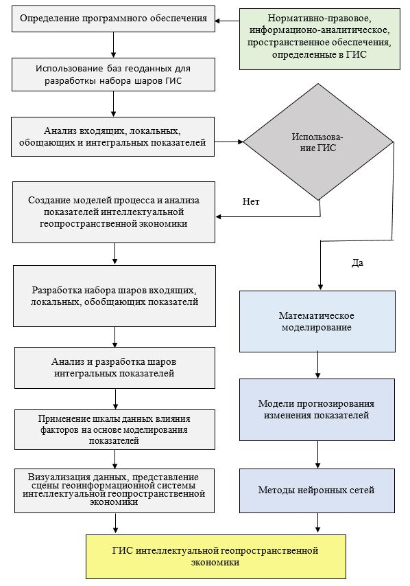

Интеллектуальная геопространственная экономическая система развития территории
В современных условиях нарастания кризисных явлений, негативного влияния внешних и внутренних факторов, пандемии COVID - 19 стагнационных процессах, наблюдаемых в экономике, особое значение имеет применение современных инструментов и подходов, которые обеспечивают ее развитие. В этом контексте особое значение имеет разработка и внедрение информационных систем и технологий, инструментария интеллектуальной геопространственной экономики, как нового направления, которое базируется на положениях и подходах теории экономического развития, использования технологий формирования интеллекта и инструментария информационных и геоинформационных систем.
Проблемные явления, которые проявляются во многих экономиках государств, формируют необходимость переосмысления
подходов к управлению
экономическими процессами на различных уровнях, особенно обеспечения дистанционной формы с использованием
информационных и геопространственных систем.
Синтез современных методов, моделей, систем позволяет построить интеллектуальную геопространственную экономику.
Кроме того, за последние годы
развитие интернет-технологий и цифровой экономики, интеллектуальных и геопространственных систем указывает на
необходимость формирования
и реализации интеллектуальной геопространственной экономики (intelectgeospates) на разных уровнях.
В начало...
Концепция базируется на теоретико-методологической платформой по определению интеллектуальной геопространственной
экономики как системы,
которая включает интеллектуальные, информационные, картографии, экономические и оборонные элементы, направленных
на обеспечение дистанционного
управления формированием и использованием всеми видами ресурсов на региональном, местном и
других уровнях, учитывая
особенности взаимодействия стейкхолдеров, влияния внешних и внутренних факторов, формирует цифровую
экономическую среду.
В начало...
Охарактеризованы элементы интеллектуальной геопространственной экономики:
интеллектуальный: формируются и используются системы развития интеллекта, которые выступают «двигателем» и «Мозговым центром» для определение количественных и качественных экономических параметров на различных уровня (государственном, региональном, местном и т.д.). Инструменты формирования и использования системы развития интеллекта состоят из:
- методов;
- моделей;
- параметров;
На интеллектуальном уровне осуществляется оценка экономических показателей, осуществляется их прогнозирования, определяются направления повышения эффективности формирования и использования всех видов ресурсов и взаимодействия стейкхолдеров, разработки стратегических контуров развития экономических систем на различных уровнях;
геопространственный: осуществляется геопространственный анализ экономических процессов с использованием геоинформационных систем и технологий, который позволяет определить направления и особенности использования всех видов ресурсов, учитывая пространственные особенности территорий и уровень взаимодействия стейкхолдеров. Для формирования геопространственного уровня используется инструментарий:
- геофакторного анализа;
- геоинформационные системы;
- геоинформационные технологии;
- Web геоинформационные системы.
экономический: формирует количественную основу экономических процессов путем разработки и использования аналитико-диагностической системы показателей, учитывая особенности информационно-аналитического и нормативно-правового обеспечения, взаимодействия стейкхолдеров. Для формирования экономического уровня используется инструментарий:
- экономического анализа;
- финансового анализа;
- стратегического анализа;
- экономико-математического моделирования;
- нейронного анализа;
- диагностически-аналитические системы;
- интегрального метода;
- нормативно-правового обеспечения;
- информационно-аналитического обеспечения.
На экономическом уровне разрабатывается аналитико-диагностическая система показателей (рис. 1.1).

Рис. 1.1 - Аналитико-диагностическая система показателей в интеллектуальной геопространственной экономике
На локальном уровне определяются локальные показатели с использованием экспертных и количественных методов оценки, учитывая уровень экономики, нормативно-правовое обеспечение, направления и особенности взаимодействия с стейкхолдерами. Локальные показатели формируются исходя из входных показателей, определяемых на основе нормативно-правового или существующего информационно-аналитического обеспечения, аналитическими методами или методами экспертного анализа.
Диагностика результатов оценки локальных показателей осуществляется на основе разработанных значений шкал показателей, установленных их нормативных значений. Шкалы разрабатываются и устанавливаются нормативные значения для каждого локального показателя.
На обобщающем уровне оцениваются обобщающие показатели, которые группируются на основе локальных показателей в зависимости от направлений и особенностей экономических отношений, развития территорий, геопространственного обеспечения, экологической и инвестиционной политики и др. На обобщающем уровне используются обобщающие модели и коэффициенты важности каждого показателя.
Диагностика результатов оценки обобщающих показателей осуществляется на основе разработанной шкалы и установленных нормативных значений.
На интегральном уровне определяется интегральный показатель развития геопространственной экономической системы с использованием интегральной модели и обобщающих показателей. На основе значений интегрального показателя оказываются диспропорции в системе и разрабатываются направления стратегического развития;
безопековий: направленный на формирование и использование информационной системы безопасности, которая позволяет осуществлять информационную, финансово-экономическую, корпоративную, стейкхолдерную, силовую безопасность. Этот элемент разрабатывается и реализуется путем использования инструментария:
- методы и модели информационной безопасности;
- инструментария финансово-экономической безопасности;
- методов и моделей корпоративной и силовой безопасности;
- обеспечения безопасности взаимодействия стейкхолдеров.
По безопасности элемент формируется из нескольких уровней, разрешается обеспечить многоуровневый контроль и безопасность.
Общая схема формирования интеллектуальной геопространственной экономики представлена на рис. 1.2.

Рис. 1.2 - Общая схема формирования интеллектуальной геопространственной экономики
Геопространственная составляющая формируется и реализуется на основе алгоритма разработки и работы баз геоданных показателей интеллектуальной геопространственной экономики:

Рис. 1.3 - Алгоритм разработки и работы баз геоданных показателей интеллектуальной геопространственной экономики
Алгоритм создания пространственной информации для моделирования и анализа данных показателей интеллектуальной геопространственной экономики представлен в виде совокупности взаимосвязанных операций по разработке и подготовке баз геоданных показателей в программной среде ГИС.
Система геоинформационного обеспечения показателей интеллектуальной геопространственной экономики с учетом входящих, локальных, обобщающих и интегральных данных реализуется по следующим составляющим:
- Применение программного обеспечения для разработки геоинформационной системы.
- Использование базы геоданных показателей интеллектуальной геопространственной экономики для создания набора слоев геоинформационной системы.
- Анализ обобщающих интегральных показателей интеллектуальной геопространственной экономики с учетом территориальных и законодательных характеристик.
- Выбор технологии оценки интегральных показателей интеллектуальной геопространственной экономики.
- Применение программного модуля ГИС и технологии математического моделирования показателей территориального развития интеллектуальной геопространственной экономики.
- Создание моделей процесса и анализа показателей интеллектуальной геопространственной экономики.
- Разработка набора слоев обобщающих показателей.
- Анализ и разработка слоя интегральных показателей интеллектуальной геопространственной экономики.
- Применение шкалы влияния данных моделирования показателей интеллектуальной геопространственной экономики.
- Визуализация данных, представление геоинформационной системы интеллектуальной геопространственной экономики.
Алгоритм реализации ГИС интеллектуальной геопространственной экономики представлены на рис 1.4.

Рис. 1.4 - Алгоритм реализации ГИС интеллектуальной геопространственной экономики
Примеры использования ГИС интеллектуальной геопространственной экономики на региональном уровне представлено на рис. 1.5 - 1.11.

Рис. 1.5 - Геоинформационная карта обобщающих пространственных показателей территориального развития использования земель регионов в системе интеллектуальной геопространственной экономики

Рис. 1.6 - Геоинформационная карта обобщающих градостроительных показателей территориального развития использования земель регионов в системе интеллектуальной геопространственной экономики
Рис. 1.7 - Геоинформационная карта обобщающих инвестиционных показателей территориального развития использования земель регионов в системе интеллектуальной геопространственной экономики
Рис. 1.8 - Геоинформационная карта обобщающих экологических показателей территориального развития использования земель регионов в системе интеллектуальной геопространственной экономики

Рис. 1.9 - Геоинформационная карта интегральных показателей территориального развития использования земель регионов в системе интеллектуальной геопространственной экономики

Рис. 1.10 - Геоинформационная 3-D модель мониторинга состояния территориального развития использования земель регионов в системе интеллектуальной геопространственной экономики

Рис. 1.11 - Геоинформационная 3-D модель мониторинга состояния и прогнозных тенденций территориального развития использования земель регионов в системе интеллектуальной геопространственной экономики
Информационной основой для формирования геопространственной составляющей является: землеустроительная документация, карты М: 500, 1000, 2000, 5000, данные по пространственным, экономическим, инвестиционным, экологическим, градостроительным, морским показателям;
информационный: формируется информационная платформа функционирования интеллектуальной геопространственной экономического системы, которая является ее «оболочкой» и связывает в единое целое элементы.
Общая схема технологии разработки информационного уровня интеллектуальной геопространственной экономической системы представлена на рис. 1.12.
Из общей схемы технологии разработки информационного уровня интеллектуальной геопространственной экономической системы реализуются основные этапы:
- определение системы факторов формирования геопространственной экономической системы на основе информационно-аналитического и нормативно-правового обеспечения в зависимости от уровня выполнения задачи (государство, регион, город, другие территориальные объединения или хозяйствующие субъекты)
- формирование многоуровневой аналитико-диагностической системы показателей формирования геопространственной экономической системы на основе определенной системы факторов, фундаментальных и прикладных разработок три уровня: локальный, обобщающий и интегральный. Каждому уровню соответствуют показатели, которые формируют иерархическую систему;
- разработка методологического подхода к интегральной оценки показателей геопространственной экономической системы, который включает совокупность взаимосвязанных этапов (рис. 1.13);
- оценка интегрального показателя развития геопространственной экономической системы осуществляется на основе использование методологического подхода. При этом методы, модели оценки разрабатываются и используются в экономическом блоке в соответствии с показателями определенных в лечебно-аналитической системе;
- построение геопрстранственной экономической системы с использованием геоинформационных и информационных технологий, технологий обеспечения информационной безопасности. Кроме того, используется программное обеспечения по использованию полученных данных в информационной системе, формирование баз.

Рис. 1.12 - Общая схема технологии разработки информационного уровня интеллектуальной геопространственной экономической системы данных, их прогнозирования, развития искусственного интеллекта, геоинформационных систем, систем информационной безопасности;

Рис. 1.13 - разработка методологического подхода к интегральной оценки показателей геопространственной экономической системы.
В начало...
На основе использования представленной технологии разрабатываются мероприятия по повышению эффективности и результативности, обеспечение развития системы, определения и реализации стратегических контуров развития системы.
Для разработки информационной составляющей используется инструментарий: программного обеспечения (С ++, Python), искусственного интеллекта, программного обеспечение по формированию информационной безопасности.
Для реализации информационной составляющей разрабатывается аппаратно-информационная модель геопространственной экономической системы.
Используется аппаратно-информационная модель в сфере экономических отношений для определения уровня геопространственного развития на разных уровнях экономики (государственном, региональном, других террториальних объединений, предприятий), его прогнозирования и обеспечения повышение в современных условиях развития и функционирования экономичеких субъектов и взаимодействия стейкхолдеров.
Суть аппаратно-информационной модели заключается в применении технологии определения уровня геопростанственного развития на разных уровнях развития экономических отношений на основе использования информационно и геоинформационного аппарата, многоуровневой аналитически-диагностической системы показателей, направлений и результатов интегральной оценки, технологий искусственного интеллекта и информационной безопасности.
Поставленная задача достигается тем, что в разработке и применении аппаратно-информационной модели определение уровня геопростанственного развития на разных уровнях развития экономических отношений на основе совокупности технических процедур и технологии, учитывающие взаимодействие информационной, геопростанственной, экономической, интеллектуальной и безопасности составляющих, учитывая особенности и направления взаимодействия стейкхолдеров.
Результаты применения аппаратно-информационной модели: позволяет построить информационную систему интеллектуальной геопространственной экономики на разных ее уровнях, реализуется с применением специальных информационно-расчетных и геопростанственних комплексов и сохраняется на информационных носителях и информационной среде.
В основу полезной аппаратно-информационной модели поставлена задача - разработка технологии определения уровня развития интеллектуальной геопространственной экономики на разных ее уровнях на основе применения комплекса взаимосвязанных информационных модулей и аппаратных комплексов. Представленная аппаратно-информационная модель позволяет сформировать информационную базу по уровню развития интеллектуальной геопространственной экономики на разных ее уровнях принятия решений и рост эффективности основных направлений, учитывая особенности взаимодействия стейкхолдеров. Аппаратно-информационная молений разрешается дистанционно управлять экономическими отношениями, всеми видами ресурсов на различных уровнях.
Аппаратно-информационная модель определения уровня развития интеллектуальной геопространственной экономики на различных ее уровнях включает следующие модули и блоки (рис. 1.14):
- Входной модуль сбора информации о факторах, формирующих информационное обеспечение уровня развития интеллектуальной геопространственной экономики на соответствующем уровне (М1).
- Аппаратный модуль хранения информации о факторах уровня развития интеллектуальной геопространственной экономики на должном уровне на информационных носителях (М2).
- Аппаратный блок отбора факторов по определенным критерия (Б1).
- Информационный модуль построения многоуровневой системы факторов, формирующих информационное обеспечение уровня развития интеллектуальной геопространственной экономики на соответствующем уровнеМ3).
- Аппаратный блок формирования иерархической многоуровневой системы факторов ( Б 2 ) с применением метода классификации иерархий и определения возможностей реагирования на изменения, происходящие в системе и технологий искусственного интеллекта.
- Аппаратный модуль хранения информации о многоуровневой системы на информационных носителях (М4).
- Комплекс представленных модулей и блоков формируют первый уровень аппаратно-информационной модели и систему информационной безопасности(Р1).
- Аппаратный модуль перехода от факторов к показателям на основе квазиметрических моделей (М5).
- Информационный модуль формирования многоуровневой аналитико-диагностической системы показателей уровня развития интеллектуальной геопространственной экономики на соответствующем уровне(М6).
- Аппаратный блок определения показателей уровня развития интеллектуальной геопространственной экономики на соответствующем уровне с определенными методами и моделями на третьем уровне системы ( Б 3 ) с использованием технологий искусственного интеллекта.
- ААппаратный блок определения показателей уровня развития интеллектуальной геопространственной экономики на соответствующем уровне с определенными методами и моделями на втором уровне системы ( Б 4 ) с использованием технологий искусственного интеллекта.
- Аппаратный блок определения показателей уровня развития интеллектуальной геопространственной экономики на соответствующем уровне с соответствующими методами и моделями на первом уровне системы ( Б 5 ) с использованием технологий искусственного интеллекта.
- Аппаратный модуль хранения информации по определенным показателям многоуровневой лечебно-аналитической системы на информационных носителях(M7).
- Аппаратный блок определения интегрального показателя уровня развития интеллектуальной геопространственной экономики на соответствующем уровне с использованием соответствующих методов и моделей и технологий искусственного интеллекта (Б6).
- Аппаратный модуль хранения информации по определенному интегрального показателя многоуровневой лечебно-аналитической системы на информационных носителях (M8).
- Комплекс представленных модулей и блоков формируют второй уровень аппаратно-информационной модели и систему информационной безопасности (Р22).
- Аппаратный модуль отказа от реализации проектных решений по развитию интеллектуальной геопространственной экономики на соответствующих уровнях ( M 9 ) с использованием технологии искусственного интеллекта и построенной шкалы показателей.
- Информационный модуль принятия проектных решений по интегральному показателю и построенной шкале ( M 10 ) с использованием технологии искусственного интеллекта и построенной шкалы показателей.
- Аппаратный модуль реализации проектных решений по развитию интеллектуальной геопространственной экономики на соответствующих уровнях ( M 11 ) с использованием технологии искусственного интеллекта.
- Комплекс представленных модулей и блоков формируют третий уровень аппаратно-информационной модели и систему информационной безопасности (Р3).
- Аппаратный блок прогнозирования интегрального показателя уровня развития интеллектуальной геопространственной экономики на соответствующем уровне с использованием соответствующих методов и моделей и технологий искусственного интеллекта (Б7).
- Аппаратный модуль хранения информации по спрогнозировать интегральным показателем многоуровневой лечебно-аналитической системы на информационных носителях (M12).
- Аппаратный модуль реализации проектных решений по развитию интеллектуальной геопространственной экономики на соответствующих уровнях на прогнозных значениях ( M 13 ) с использованием технологии искусственного интеллекта.
- Комплекс представленных модулей и блоков формируют четвертый уровень аппаратно-информационной модели и систему информационной безопасности (P4).
- Аппаратный модуль простроенной геоинформационных карт входят и локальных показателей развития интеллектуальной геопространственной экономики на соответствующих уровнях ( M 14 ) с использованием геоинформационных систем и технологий.
- Аппаратный модуль простроенной геоинформационных карт обобщающих показателей развития интеллектуальной геопространственной экономики на соответствующих уровнях ( M 15 ) с использованием геоинформационных систем и технологий.
- Аппаратный модуль простроенной геоинформационных карт интегрального показателя уровня развития интеллектуальной геопространственной экономики на соответствующих уровнях ( M 16 ) с использованием геоинформационных систем и технологий.
- Аппаратный модуль построенным 3-D геоинформационных мониторинговых карт прогнозного интегрального показателя уровня развития интеллектуальной геопространственной экономики на соответствующих уровнях ( M 17 ) с использованием геоинформационных систем и технологий.
- Аппаратный модуль хранения информации по геоинформационному обеспечения интеллектуальной геопространственной экономики (M18).
- Аппаратный модуль реализации стратегических проектных решений по развитию интеллектуальной геопространственной экономики на соответствующих уровнях с учетом пространственного обеспечения ( M 19 ) с использованием технологии искусственного интеллекта.
- Комплекс представленных модулей и блоков формируют пятый уровень аппаратно-информационной модели и систему информационной безопасности (P5).

Рис. 1.14 - Аппаратно-информационная модель уровня развития интеллектуальной геопространственной экономики на соответствующем уровне
Аппаратно-информационная модель уровня развития интеллектуальной геопространственной экономики на соответствующем уровне реализуется следующим образом:
- На основе сбора информации о факторах ( M 1 ), учитывая экономические, технологические, стейкхолдерни, пространственные, инвестиционные, градостроительные, экологические и другие особенности, признаки земель через аппаратные средства хранения информации ( M 2 ) и отбора факторов ( Б 1 ), формируется система факторов, влияющих на уровень развития интеллектуальной геопространственной экономики на соответствующем уровне ( M 3 ). Для отбора факторов используется технология искусственного интеллекта. На основе сформированной системы формируется многоуровневая система факторов ( Б 2 ), включающей три уровня факторов. Если построена многоуровневая система факторов по установленным критериям, то осуществляется сохранение информации аппаратными средствами ( M 4 ). Если "Нет", то опять возвращаемся к обновлению информации о факторах уровня развития интеллектуальной геопространственной экономики, их соответствия современным условиям. представленная группа модулей и блоков формируют первый уровень аппаратно-информационной модели уровня развития интеллектуальной геопространственной экономики на определенном уровне, строится информационный защита от внешнего и внутреннего воздействия(Р1).
- Переход от первого уровня модели к другой осуществляется через аппаратный модуль трансформации факторов с показателями на основе квазиметричних моделей ( M 5 ). На основе проведенного перехода, построено информационный модуль формирования многоуровневой системы показателей уровня развития интеллектуальной геопространственной экономики на определенном уровне ( M 6 ), в рамках которой определяются соответствующие показатели на третьем ( Б 3 ), втором ( Б 4 ), первом ( Б 5 ) уровнях системы и использованием технологии искусственного интеллекта. Результаты оценки показателей хранятся на аппаратных средствах (информационных носителях) модуля хранения информации ( M 7 ). Затем в аппаратном блоке определяются интегральный показатель уровня развития интеллектуальной геопространственной экономики на определенном уровне за соответствующими методами и моделями ( Б 6 ), результаты которого на информационных носителях в аппаратном блоке ( M 8 ). Следует отметить определенный на предыдущем блоке интегральный показатель по построенной шкале соответствия автоматически проверяется уровень соответствии с принятия и реализации решений по уровню развития интеллектуальной геопространственной экономики на соответствующем уровнем. Если интегральный показатель больше или равна 5 (I ³ 5), то осуществляется переход на третий уровень аппаратно-информационной модели определения инвестиционной привлекательности земель региона. Если "Нет", то на третьем уровне модели реализуется аппаратный модуль отказа от реализации проектных решений по обеспечению развития интеллектуальной геопространственной экономики ( M 9 ). При этом используется технология искусственного интеллекта, экономические методы и модели, формируется система информационной безопасности второго уровня (P2).
- На третьем уровне ( P 3 ) модели реализуется информационный модуль принятия проектных решений по интегральным показателем и построенной шкале ( M 10 ) и осуществляется переход к аппаратному модуля реализации проектных решений по обеспечению развития интеллектуальной геопространственной экономики ( M 11 ). Формируется третий уровень и система безопасности. Формирования и принятия решений осуществляется на основе использования технологии искусственного интеллекта.
- На четвертом уровне ( P 4 ) осуществляется прогнозирование интегрального показателя уровня развития интеллектуальной геопространственной экономики на соответствующем уровне с использованием соответствующих математических методов и моделей, нейронного моделирования и технологий искусственного интеллекта ( Б 7 ). Полученные результаты сохраняются на информационных носителях ( M 12 ). На основе полученных значений осуществляется реализация проектных решений по развитию интеллектуальной геопространственной экономики на соответствующих уровнях ( M 13 ) с использованием технологии искусственного интеллекта. формируются стратегические контуры и направления развития экономики. Осуществляется построение системы информационной безопасности.
- На пятом уровне ( P 4 ) осуществляется построение геоинформационных карт по показателям развития интеллектуальной геопространственной экономики на соответствующих уровнях ( M 14 ), ( M 15 ), ( M 16 ) с использованием геоинформационных систем и технологий. Осуществляется построенным 3-D геоинформационных мониторинговых карт прогнозного интегрального показателя уровня развития интеллектуальной геопространственной экономики на соответствующих уровнях ( M 17 ). представленная информация сохраняется на информационных носителях ( M 18 ). С учетом пространственного обеспечения осуществляется реализация стратегических проектных решений по развития интеллектуальной геопространственной экономики на соответствующих уровнях ( M 19 М19) с использованием технологии искусственного интеллекта.
Таким образом, аппаратно-информационная модель уровня развития интеллектуальной геопространственной экономики на соответствующем уровне отражает системное информационное обеспечение экономических процессов и отношений для роста их эффективности, формирования и использования на соответствующих уровнях комплексных информационных, геоинформационных, технических средств, математических методов и моделей, экономического инструментария, технологии искусственного интеллекта. Аппаратно-информационная модель обеспечивает полноту и обоснованность принятие решений группами стейкхолдеров на разных стадиях разработки и реализации экономических процессов, дистанционность, управляемость всеми видами ресурсов и активов, снижение затрат на формирование и использование персонала, обеспечения полного контроля в системе управления экономическими процессами и отношениями. На основе аппаратно-информационная модель уровня развития интеллектуальной геопространственной экономики формируется цифровая экономика для различных уровней с использованием комплекса современных интеллектуальных, информационных, геоинформационных технологий и математического аппарата.
В начало...
Аппаратно-информационная модель определения уровня развития интеллектуальной геопространственной экономики на соответствующем уровне формирует системное среду информационного обеспечения развития интеллектуальной геопространственной экономики, обеспечивает реализацию проектов и проектных решений путем применения определенных блоков и модулей с учетом пространственных особенностей и уровня взаимодействия стейкхолдеров. Технологически аппаратно-информационная модель включает информационные, геоинформационные и технические средства формирование, сохранение информации, ее обработки и специальные средства определения уровня развития интеллектуальной геопространственной экономики на соответствующем уровне.
Аппаратно-информационная модель уровня развития интеллектуальной геопространственной экономики на соответствующем уровне отличается тем, что строится информационная лечебно-аналитическая система показателей, которая позволяет автоматизировать определение уровня развития интеллектуальной геопространственной экономики, принятия проектных решений, учитывая влияние факторов, пространственных особенностей, стейкхолдерних отношений, обеспечивает дистанционное управление всеми видами ресурсов и активов, полноту и достоверность полученной информации, используя современные технологии и искусственный интеллект. Аппаратно-информационная модель уровня развития интеллектуальной геопространственной экономики формирует цифровую экономику на должном уровне.
В начало...